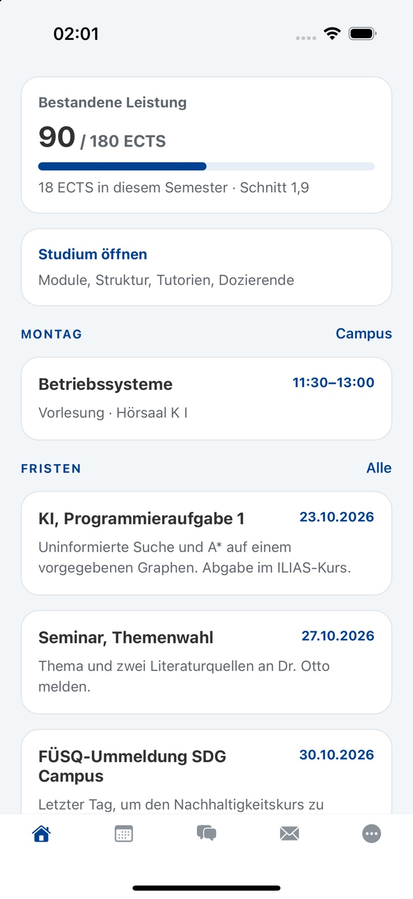
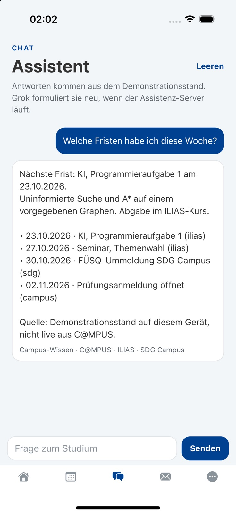
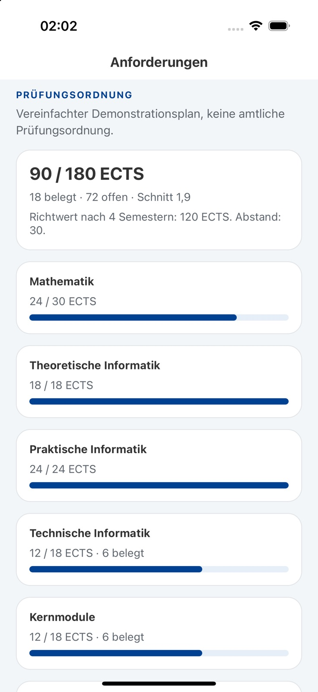
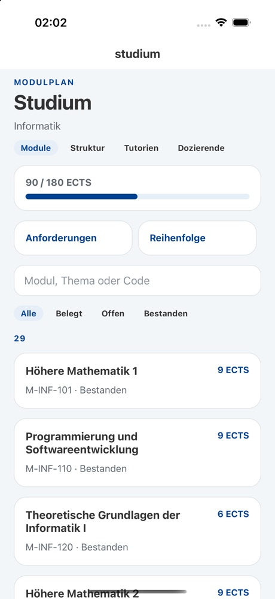
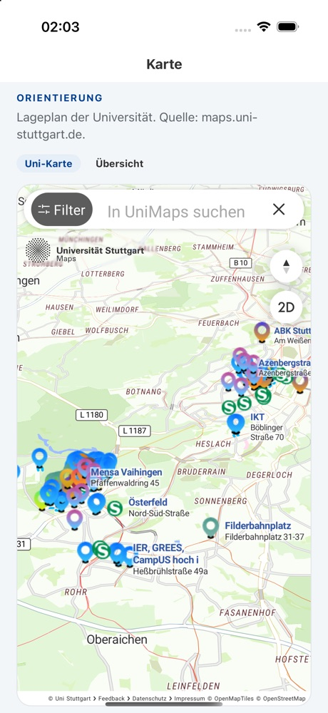

Stundenplan
Vorlesungen, Übungen, Räume und Zeiten aus dem eigenen Plan — heute zuerst.
Studentisches Projekt
University Assistant bündelt Stundenplan, Modulfortschritt, Fristen, ILIAS-Material, Lageplan und UniMail in einer App — und beantwortet Fragen dazu auf Deutsch oder Englisch.
Nicht offiziell: ein studentisches Projekt, kein Angebot der Universität Stuttgart.


Funktionen
Ein Datensatz, viele Ansichten: Der Demonstrationsstand zeigt, wie Stundenplan, Prüfungsordnung, Material und Campus-Dienste in einer App zusammenspielen.
Vorlesungen, Übungen, Räume und Zeiten aus dem eigenen Plan — heute zuerst.
Bestandene ECTS je Bereich, gewichteter Schnitt und der Weg zum Abschluss.
Fristen aus dem Demonstrationsdatensatz. C@MPUS-Struktur und Studiengänge liest die App live, sobald der Server eingerichtet ist.
Fragen zu Fristen, ECTS, Modulen oder Räumen — beantwortet aus dem eigenen Stand.
Postfach lesen, durchsuchen und sortieren — über IMAP, sobald der Server verbunden ist.
Gebäude, Räume und Ansprechstellen auf der Uni-Karte.
Peer-Bewertungen, geteilte Notizen und Themen aus vergangenen Prüfungen.
PaperCut-Drucken und Netzzugang, erklärt in den richtigen Schritten.
Status
Die App mischt Live-Zugriffe mit einem fiktiven Demonstrationsdatensatz. Diese Tabelle sagt, was was ist.
| Bereich | Status | Was das heißt |
|---|---|---|
| C@MPUS-Struktur & Studiengänge | Live | Die App liest Struktur und Studiengangsliste, wenn der Assistant-Server eingerichtet ist. |
| SIAM-Anmeldung | Eingeschränkt | Öffnet den Identity Provider; die OIDC-Client-Registrierung bei TIK ist Voraussetzung. |
| UniMail | Live | IMAP-Zugriff über den Assistant-Server; read-only, sobald verbunden. |
| Stundenplan, Noten, ECTS | Demo | Fiktiver Datensatz von Lena Hartmann. |
| ILIAS, SDG, Fristen, News, Altklausuren | Demo | Fiktive Inhalte; keine Live-Synchronisation. |
| Lageplan | Extern | Karte von maps.uni-stuttgart.de; beim Öffnen wird die externe Seite geladen. |
| VPN | Dev-Build | Android-Engine gebaut; iOS-Tunnel und Gerätetest stehen aus. |
| App Store / TestFlight | Nicht verfügbar | Beta über Tally; kein Store-Build. |
| Web | Eingeschränkt | Export möglich; C@MPUS-Browser-Login und VPN funktionieren dort nicht. |
Demo-Daten sind fiktiv. Offizielle Auskünfte der Universität haben immer Vorrang.
Assistent
Die Antwort entsteht zuerst auf dem Gerät — sofort und ohne Netz. Ist ein Assistant-Server eingerichtet, kann Grok sie anschließend neu formulieren; ohne Server bleibt alles lokal.
Fortschritt
Der vereinfachte Demonstrationsplan zeigt, wie ein Studienverlauf in der App aussieht — klar als Annahme gekennzeichnet, nie als amtliche Auskunft.


Campus & Dienste
Orientierung auf dem Campus und die Dienste, die sonst über drei Portale verteilt sind.

Einblicke
Aufnahmen aus dem Demonstrationsprofil von Lena Hartmann. Die Noten, Fristen und Kurse sind erfunden. Tippe auf ein Bild, um es zu vergrößern.
Datenschutz & Datenfluss
Die App arbeitet zuerst lokal. Der optionale Assistant-Server, UniMail und der Lageplan sind die Stellen, an denen Daten das Gerät verlassen. Die vollständige Erklärung steht in der Datenschutzerklärung.
Stundenplan, Noten, Notizen und Chat liegen im App-Speicher auf dem Gerät. Der App-Speicher ist nicht verschlüsselt; auf einem geteilten Gerät sind die Daten lesbar. Der Assistant-Server ist optional.
Beim manuellen Login tippst du es nur auf der Seite der Universität. Die optionale automatische Anmeldung speichert es im Gerätespeicher (SecureStore), nicht auf dem Server.
Für IMAP geht es an den Assistant-Server und bleibt dort im Prozessspeicher; es wird nicht auf dem Gerät gespeichert und nicht geloggt. Beim Trennen oder Abmelden wird es gelöscht.
Nur mit eingerichtetem Assistant-Server und xAI-Schlüssel kann Grok die Antwort neu formulieren. Dabei gehen Frage, letzte Chat-Turns und der lokale Datenauszug an den Server und an xAI. Ohne Server bleibt die Antwort lokal.
University Assistant ist ein studentisches Demonstrationsprojekt. Es ist kein Angebot der Universität Stuttgart, verwendet nicht das amtliche Logo, und die Noten von Lena Hartmann sind fiktiv. Vollständige Datenschutzerklärung
FAQ
Die kurze Antwort auf die Fragen, die vor der Beta am häufigsten kommen.
Nein. Es ist ein studentisches Projekt und kein Angebot der Universität Stuttgart. Es verwendet nicht das offizielle Logo und keine amtlichen Daten.
Nichts. Der Code steht unter AGPL-3.0-or-later, die Beta ist kostenlos, und es gibt keine In-App-Käufe.
Zuerst auf dem Gerät. Der Assistant-Server ist optional. Die vollständige Beschreibung steht in der Datenschutzerklärung.
Beim manuellen C@MPUS-Login tippst du es nur auf der Seite der Universität. Die optionale automatische Anmeldung speichert es im Gerätespeicher. Für UniMail geht es an den Assistant-Server und bleibt dort im Prozessspeicher; es wird nicht auf dem Gerät gespeichert und nicht geloggt.
Nur wenn ein Assistant-Server mit xAI-Schlüssel eingerichtet ist: Frage, letzte Chat-Turns und der lokale Datenauszug. Ohne Server bleibt die Antwort lokal.
Im Moment nur über die Beta-Registrierung. Es gibt noch keinen App-Store- oder TestFlight-Link. Jetzt für die Beta registrieren.
Über GitHub-Issues, Pull Requests oder per E-Mail. Sicherheitshinweise bitte vertraulich an uni-assistant@olimo.me.
Open Source
Der Code steht unter AGPL-3.0-or-later auf GitHub. Bau ihn, prüfe ihn, verändere ihn — die Tests laufen mit einem Befehl.
Für Interessierte
Einrichtung, Architektur und Betrieb: Die technische Dokumentation beschreibt, wie die App aufgebaut ist und wie du sie selbst startest.